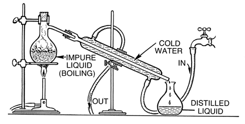

The distilled spirits that we drink today are unique in some aspect from all of it's competitors and many have a culture or history all their own. The resurgence of the cocktail culture over the past couple decades has been fueled by the innovations of many of these spirits and the people behind the scenes. Yet, for all the differences there are many similarities. Bourbon families like the Beams and Samuels have carried their craft through generations just like the agave farmers and tequila distillers of Mexico. The industry is growing and the innovations keep coming, and at the same time, the past is being revived.
